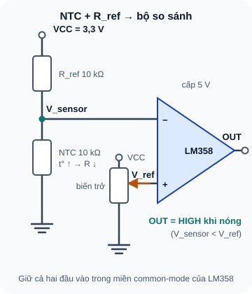
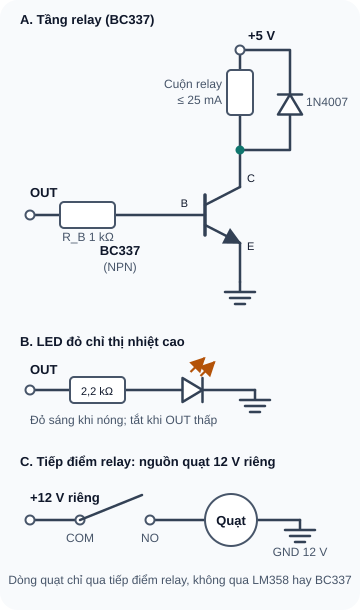
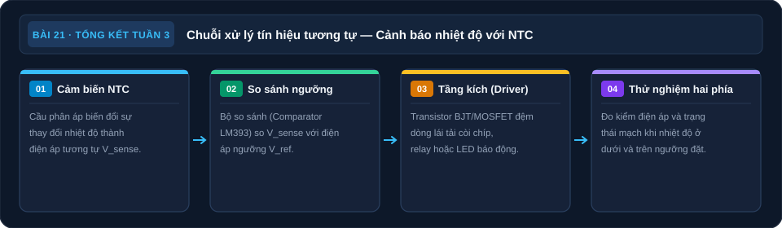

Ôn Tập Tuần 3 & Mini Project: Mạch Báo Nhiệt Tự Động
Tổng hợp BJT, MOSFET, PWM, Op-Amp vào một mạch hoàn chỉnh: cảm biến nhiệt → comparator → relay bật quạt.

1. Ôn tập nhanh Tuần 3
| Câu hỏi | Đáp án |
|---|---|
| BJT NPN BC547: I_B=50µA, hFE=200. I_C=? | I_C = 200 × 50µA = 10mA |
| Transistor vào Saturation khi nào? | Khi I_B đủ lớn để I_C bị giới hạn bởi mạch ngoài; V_CE < 0,3V |
| Mạch relay driver bắt buộc có linh kiện nào? | Freewheeling diode (1N4007) song song cuộn relay, cathode lên VCC |
| Common Emitter: A_V = ? (với C_E bypass, R_C=4,7kΩ, I_CQ=1mA) | r_e = 26Ω; A_V = –4700/26 = –181 |
| MOSFET nào có thể được GPIO 3,3 V điều khiển cho tải đã chọn? | Tra R_DS(on) tối đa tại V_GS thực tế ≤3,3 V và kiểm dòng khởi động/kẹt, tổn hao nhiệt, điện tích Gate và giới hạn GPIO. V_GS(th) đo ở dòng rất nhỏ, không chứng minh dẫn đủ tải. |
| PWM 5V, duty cycle 75%. V_avg = ? | V_avg = 0,75 × 5V = 3,75V |
| Op-Amp Inverting: R_f=47kΩ, R_in=4,7kΩ. A_V = ? | A_V = –47k/4,7k = –10 (đảo pha 10 lần) |
| Op-Amp Non-Inverting: R_f=90kΩ, R1=10kΩ. A_V = ? | A_V = 1 + 90k/10k = 10 (thuận pha 10 lần) |
| LM358 dùng như comparator: V_in(+) > V_ref(–). V_out = ? | Ngõ ra đi về mức cao theo nguồn và tải nhưng không rail-to-rail; đo/tra swing HIGH của đúng LM358-N với tải thực, không lấy V_out≈VCC. |
| Tại sao cần R_GS pull-down 10kΩ trong mạch MOSFET switch? | Đảm bảo V_GS=0 khi GPIO floating → MOSFET không tự bật ngẫu nhiên |
2. Mini Project Tuần 3: Mạch Báo Nhiệt Tự Động
- Cảm biến: NTC Thermistor 10kΩ — điện trở giảm khi nhiệt độ tăng
- Mạch phân áp: NTC + R_ref = 10kΩ → tạo V_sensor thay đổi theo nhiệt độ
- So sánh ngưỡng: Op-Amp LM358 Comparator — V_ref từ biến trở
- Khi nhiệt > ngưỡng: comparator output HIGH → BJT BC337 ON → relay đóng → quạt bật; chọn relay cuộn 5V dòng thấp ≤25mA cho mạch thử này
- LED đỏ: báo trạng thái HOT (relay ON)
- Khi LED đỏ tắt và relay nhả, mạch trở về trạng thái bình thường; chỉ kết luận sau khi đo V_OUT và trạng thái tiếp điểm
- Nguồn: 3,3V cho phân áp NTC/biến trở; 5V cho LM358 và cuộn relay; 12V riêng cho quạt qua tiếp điểm relay; GND chung ở phía điều khiển
2.1 Nguyên lý NTC Thermistor
NTC (Negative Temperature Coefficient) thermistor là điện trở đặc biệt có điện trở giảm khi nhiệt độ tăng. NTC 10kΩ = điện trở 10kΩ ở 25°C. Khi nhiệt độ tăng lên 50°C, điện trở giảm xuống khoảng 3–4kΩ.

Đọc mô tả D21-1
3,3 V qua R_ref 10 kΩ tới nút V_sensor, rồi NTC 10 kΩ xuống GND. V_sensor vào đầu vào đảo của LM358. Một biến trở cho V_ref vào đầu vào không đảo. Nóng thì NTC nhỏ, V_sensor nhỏ hơn V_ref và ngõ ra lên HIGH. Đây là sơ đồ để phân tích/mô phỏng; chỉ lắp trên phần cứng sau khi xác minh đúng part/module, nguồn, dòng và duyệt mạch cụ thể.
2.2 Sơ đồ khối hệ thống

Đọc mô tả D21-2
Ba khối riêng. A: ngõ ra OUT qua R_B 1 kΩ vào chân B của BC337, emitter nối GND, collector nối cuộn relay lên +5 V, diode 1N4007 ngược song song cuộn (cathode +5 V, anode phía collector). B: LED đỏ từ OUT qua R 2,2 kΩ xuống GND báo nhiệt cao; khi OUT thấp, LED tắt. C: tiếp điểm COM–NO của relay đóng cắt nguồn 12 V riêng của quạt. Đây là sơ đồ để phân tích/mô phỏng; chỉ lắp trên phần cứng sau khi xác minh đúng part/module, nguồn, dòng và duyệt mạch cụ thể.
2.3 Tính toán
| Thành phần | Giá trị | Lý do |
|---|---|---|
| R_ref (phân áp NTC) | 10kΩ | Bằng R_NTC tại 25°C → V_sensor = VCC/2 = 1,65V ở nhiệt phòng |
| R_pot (V_ref) | Biến trở 10kΩ | Điều chỉnh ngưỡng nhiệt độ kích hoạt |
| Op-Amp | LM358 op-amp 1 | Single supply 5V, comparator mode |
| R_B (BJT driver) | 1 kΩ minh họa | LM358-N không có ngõ ra rail-to-rail; mức HIGH và dòng cấp với LED/base đồng thời chưa được bảo đảm tại nguồn 5 V. Chỉ dùng nhánh relay để mô phỏng; đo V_OUT, tính I_B và V_CE trên đúng mạch đã duyệt trước khi lắp. |
| Transistor | BC337 | 800mA I_C_max; kiểm tra đúng chân và dòng cuộn của relay đang dùng |
| Relay thử nghiệm | 5V, cuộn ≥200Ω (≤25mA), SPDT | Relay cuộn 70Ω/71mA cần thiết kế driver mạnh hơn và kiểm tra khả năng cấp dòng của LM358 |
| Freewheeling diode | 1N4007 | Bảo vệ BC337 khi relay ngắt |
2.4 Thử khối cảm biến/LED và mô phỏng relay
Mạch so sánh ngưỡng chậm này chưa có hysteresis: nhiễu quanh ngưỡng có thể làm relay đóng/ngắt liên tục. Chỉ thử phần NTC–LM358–LED ở nguồn thấp áp; phần BC337, relay và quạt trong D21-2 dùng để phân tích/mô phỏng. Chưa lắp relay hoặc tải thật cho đến khi thêm hysteresis với hai ngưỡng nóng/lạnh được tính và đo trên đúng part, kiểm dòng/cuộn/tiếp điểm và được duyệt kỹ thuật. TI: hysteresis cho đầu vào chậm/nhiễu.
Cấp nguồn: Sơ đồ dùng rail 5 V cho LM358 và rail 3,3 V cho NTC/V_ref. Chỉ tạo rail 3,3 V bằng AMS1117 đúng mã khi đã kiểm pinout, dropout ở tải thực, tụ ổn định và nhiệt theo datasheet; nếu chưa có đúng linh kiện/nguồn, phân tích hoặc mô phỏng hai rail, không đấu tùy ý 5 V vào nhánh 3,3 V.
Mạch phân áp: 3,3V → R_ref(10kΩ) → NTC → GND. Đo V_sensor ở điểm giữa (kỳ vọng ~1,65V ở nhiệt phòng).
V_ref: 3,3V → biến trở 10kΩ → GND. Chân giữa nối IN(+) LM358. Chỉnh biến trở sao cho V_ref thấp hơn V_sensor lúc nguội; điều chỉnh ngưỡng bằng phép đo thực tế.
LM358 Comparator: V_sensor → IN(–, pin 2), V_ref → IN(+, pin 3). Nguồn +5V pin 8, GND pin 4; 100nF từ +5V xuống GND sát IC. Đo V_out pin 1. Với LM358-N, tránh đưa điện áp đầu vào lên sát rail +5V.
LED trạng thái: V_out → R(2,2kΩ) → LED đỏ → GND. Đỏ sáng khi nóng và tắt khi OUT thấp; kiểm tra cực LED. Không mắc LED thứ hai từ +5 V về OUT để suy trạng thái ngược: LM358-N không có ngõ ra rail-to-rail, nên hai LED có thể không tắt/sáng tách bạch.
Relay trên mô phỏng: Phân tích nhánh BC337–diode–cuộn relay và tiếp điểm COM/NO của D21-2; chưa đấu cuộn hoặc quạt thật vì thiếu hysteresis và chưa xác minh relay cụ thể. Đo hai ngưỡng chuyển trạng thái khi tăng/giảm nhiệt; nếu gần trùng nhau, mạch chưa phù hợp cho relay cơ.
Test phần thấp áp: Dùng ngón tay làm ấm NTC. V_sensor giảm; khi V_sensor < V_ref, OUT tăng và LED đỏ sáng. Khi nguội lại, LED tắt. Đo V_OUT và ghi thời điểm LED chập chờn quanh ngưỡng để thấy lý do cần hysteresis.
Điều chỉnh ngưỡng: Chỉnh biến trở V_ref để hệ thống kích hoạt ở nhiệt độ mong muốn.
2.5 Bảng đo kiểm
| Điểm đo | Kỳ vọng | Đo được | P/F |
|---|---|---|---|
| V_sensor (nhiệt phòng) | ~1,5–1,8V | _____ | — |
| V_sensor (ngón tay ấm) | Thấp hơn lúc nguội; so với V_ref đã đặt | _____ | — |
| V_ref (biến trở) | Điều chỉnh trong vùng V_sensor đo được | _____ | — |
| V_out LM358 (nhiệt thấp) | ~0V (LOW) | _____ | — |
| V_out LM358 (nhiệt cao) | ~3–4V (HIGH) | _____ | — |
| LED đỏ sáng khi nhiệt cao | Có | _____ | _____ |
| Relay ở mô phỏng | Chỉ phân tích trạng thái; chưa lắp cuộn/quạt thật | _____ | _____ |
3. Tổng kết Tuần 3
| Bài | Kiến thức cốt lõi | Kỹ năng tích lũy |
|---|---|---|
| 15 | BJT NPN/PNP — 3 vùng, hFE, tính R_B | Đo transistor, mạch switch LED |
| 16 | Relay driver — freewheeling diode bắt buộc | Lắp relay hoàn chỉnh, debug 4 lỗi |
| 17 | CE Amplifier — Q-point, phân cực phân áp, A_V | Tính và lắp mạch khuếch đại |
| 18 | MOSFET — Logic-Level, R_DS(on), ESD | NMOS switch motor DC |
| 19 | PWM — duty cycle, tần số, V_avg | Dimmer LED, điều khiển motor |
| 20 | Op-Amp — 4 cấu hình, LM358 | Lắp Non-Inverting, đo A_V thực tế |
| 21 | Tổng hợp tất cả | Mạch báo nhiệt NTC+Comparator+Relay |
Tuần 4 chuyển từ phần cứng analog sang giao tiếp số (Digital Communication): I2C, SPI, UART. Hãy chuẩn bị thêm: màn hình OLED 0,96" I2C (SSD1306), module SPI (bất kỳ), logic analyzer (nếu có) và Arduino/ESP32. Đây là kỹ năng quan trọng nhất khi làm việc với module cảm biến thực tế.
Sơ đồ tổng hợp Bài 21

Đọc nội dung sơ đồ bằng chữ
- NTC đo nhiệt: Cầu chia áp đổi nhiệt thành áp. (mục Nguyên lý NTC Thermistor).
- So ngưỡng: Comparator quyết định trạng thái. (mục Sơ đồ khối hệ thống).
- Driver tải: Tầng transistor cấp dòng đầu ra. (mục Sơ đồ khối hệ thống).
- Thử hai phía: Đo dưới và trên ngưỡng đặt. (mục Bảng đo kiểm).